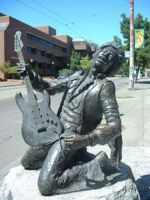
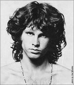
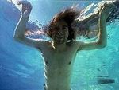
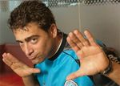
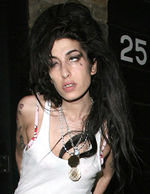

De: La Frikipedia, la enciclopedia extremadamente seria.
De: La Frikipedia, la enciclopedia extremadamente seria. De: La Frikipedia, la enciclopedia extremadamente seria.

|
FRIKIPEDIA QUIERE QUE ESTA DEFINICIÓN
PASE A SER UN ARTÍCULO FRIKIPÉDICO La información contenida en este artículo es una mínima parte de su jugo total, así que ponte los guantes, saca el tupperwere y empieza a exprimir el tema. Si lo haces serás recompensado con una galleta en almíbar y algo más. |
El Club de los 27 (27 Club o Forever Idiots, en inglés) es un grupo de "influyentes" músicos de rock, mejor dicho: es un grupo de gente que intentó sobresalir haciéndose el raro y les salió mal. Toda este conjunto de chicos malos fallecieron a la edad de 27, mayormente debido a mucho chupi, sexo, porros y, en algunos casos, situaciones bastante emos como cuando no podían tener orgasmos y se suicidaban. Cabe mencionar que la mayoría de las muertes han sido bajo místicas y raras circunstancias del más allá.
Otra famoso cuentito que se cree el público es que los músicos de este famoso club de loosers tenían una deuda pendiente con el "diablo" ("Satanás", "Lucifer" o "El" según las chicas superpoderosas), extraterrestre que ayudó a estos alcanzar la fama e influencia lograda por ellos. Posiblemente esta leyenda de un pacto con el el innombrable (ahre Voldemort) surge por el cantante y guitarrista de blues Robert Johnson y Baby, del cual dicen que hizo un pacto en el cruce de la autopista 61 con la 49 en Clarksdale (Mizizipiiii), algunas de sus canciones alimentan dicha leyenda: 'Crossroads' y 'Yo y el diablo fumando porro'.
| Nombre | Nacimiento/Fallecimiento | Causa de muerte | Reputación |
|---|---|---|---|
| Brian Jones | 28 de febrero de 1942 3 de julio de 1969 |
Se ahogó mientras intentaba hacer la vertical bajo el agua | Era un genio tocando la guitarra en los Piedras Rodantes (Rolling Stones) |
|  | 27 de noviembre de 1942 18 de septiembre de 1970 |
Se tragó su vomito tras mezclar parte de su semen con vino vencido mientras dormía como un bebe | Cantaba, escribía poemas a lo Cortázar y tocaba bien la viola. |
| Janis Joplin | 19 de enero de 1943 4 de octubre de 1970 |
Se quiso hacer la Trainspotting y se murió por sobredodis de heroína | Cantaba Blues con saxo. |
|  | 8 de diciembre de 1943 3 de julio de 1971 |
Le dijo a su corazón que dejara de latir porque le daba paja respirar | Cantante de la banda The Doors |
|  | 20 de febrero de 1967 5 de abril de 1994 |
Estaba jugando con una pistola y se suicidó sin querer (je, por boludo) | Cantante de Nirvana |
|  | 24 de mayo de 1973 24 de junio de 2000 |
Pensó que estaba en una carrera de Karting y tras un mal movimiento, chocó con el auto | Cantautor de Cuartetos (Si, de esos que pasan en las fiestas de quince) |
|  | 14 de septiembre de 1983 23 de julio de 2011 |
Todavía no se sabe pero se cree que se vio al espejo y al darse cuenta de lo fea que estaba ahogó en chupi | Una loquita sin remedio que se hacía la cantante |
Autor(es):